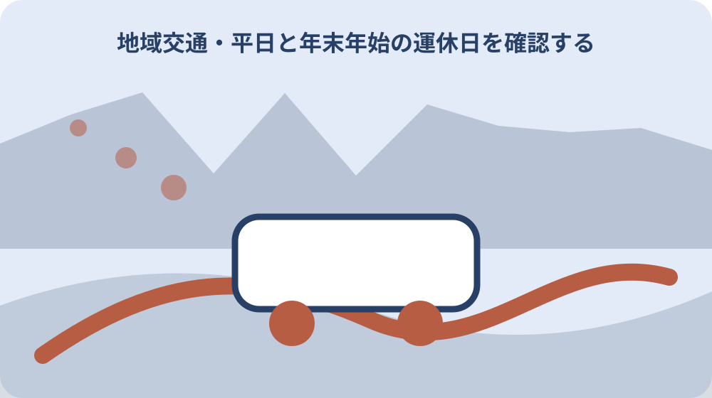

先に結論を確認する
この記事の答え：公式案内の対象は一宮地区または園田地区に住む方です。住所の地区区分を確認します。
森町で最初に照合する条件：居住地区を一宮または園田と住所で確認し、最寄駅だけで対象と判断しない。
住民票の住所から一宮・園田を確認する
確認の起点は対象は一宮地区と園田地区に住む方で、森町民全員ではありません。地域タクシーの対象地区と利用条件を住所から確認するでは、別の資料から推測せず、該当する欄と確認日を一緒に残します。
この情報が必要になるのは最寄り駅や自治会の通称だけでは公式の地区判定と一致しない場合があります。地域タクシーの対象地区と利用条件を住所から確認するを家族や担当者と共有するときは、数字や固有名詞だけを抜き出さず、その数字が示す条件まで伝えます。
実際の手順は住所を番地まで用意し、対象地区か不明なら担当課へ電話で確認します。地域タクシーの対象地区と利用条件を住所から確認するの記録には、確認した資料名、対象住所または商品、次に連絡する相手を一行で追記すると引継ぎが途切れません。
ここで止めて確かめたいのは家族の住所を利用者本人の居住地へ置き換えず、利用する人ごとに対象を確認します。公式資料に書かれていない個別判断は未確認のまま区別し、町または表示責任者から回答を得た日付を後で足します。
実証運行と本格運行の日付を分ける
確認の起点は実証は2024年10月1日から、本格運行は2025年10月1日からです。地域タクシーの対象地区と利用条件を住所から確認するでは、別の資料から推測せず、該当する欄と確認日を一緒に残します。
この情報が必要になるのは古いチラシや家族の記憶には実証時の条件が残っている可能性があります。地域タクシーの対象地区と利用条件を住所から確認するを家族や担当者と共有するときは、数字や固有名詞だけを抜き出さず、その数字が示す条件まで伝えます。
実際の手順は現在の案内更新日とチラシ版を記録し、本格運行の条件で予定を組みます。地域タクシーの対象地区と利用条件を住所から確認するの記録には、確認した資料名、対象住所または商品、次に連絡する相手を一行で追記すると引継ぎが途切れません。
ここで止めて確かめたいのは実証時の情報を現行条件と決めず、予約前に町の最新ページを再確認します。公式資料に書かれていない個別判断は未確認のまま区別し、町または表示責任者から回答を得た日付を後で足します。
利用登録とチケット申請を乗車前に終える
確認の起点は公式ページは事前の利用者登録と利用チケット申請を必要としています。地域タクシーの対象地区と利用条件を住所から確認するでは、別の資料から推測せず、該当する欄と確認日を一緒に残します。
この情報が必要になるのは通常のタクシーのように、未登録のまま車両へ直接乗る仕組みとは異なります。地域タクシーの対象地区と利用条件を住所から確認するを家族や担当者と共有するときは、数字や固有名詞だけを抜き出さず、その数字が示す条件まで伝えます。
実際の手順は電話またはウェブで登録し、受付完了とチケットの受取状態を控えます。地域タクシーの対象地区と利用条件を住所から確認するの記録には、確認した資料名、対象住所または商品、次に連絡する相手を一行で追記すると引継ぎが途切れません。
ここで止めて確かめたいのは登録送信だけで利用可能になったと考えず、不足項目や交付方法を確認します。公式資料に書かれていない個別判断は未確認のまま区別し、町または表示責任者から回答を得た日付を後で足します。

運行時間と予約受付時間を二段で書く
確認の起点は車両の運行は8時30分から15時30分、予約受付は7時から17時です。地域タクシーの対象地区と利用条件を住所から確認するでは、別の資料から推測せず、該当する欄と確認日を一緒に残します。
この情報が必要になるのは受付終了が運行終了より遅いため、時刻の意味を入れ替えると当日利用を誤ります。地域タクシーの対象地区と利用条件を住所から確認するを家族や担当者と共有するときは、数字や固有名詞だけを抜き出さず、その数字が示す条件まで伝えます。
実際の手順は通院時刻から逆算し、予約する日と迎車希望時刻を別欄にします。地域タクシーの対象地区と利用条件を住所から確認するの記録には、確認した資料名、対象住所または商品、次に連絡する相手を一行で追記すると引継ぎが途切れません。
ここで止めて確かめたいのは17時まで電話できることを17時まで乗れる意味にはしません。公式資料に書かれていない個別判断は未確認のまま区別し、町または表示責任者から回答を得た日付を後で足します。
平日と年末年始の運休日を確認する
確認の起点は月曜から金曜が運行日でも、祝日と12月29日から1月3日は運休です。地域タクシーの対象地区と利用条件を住所から確認するでは、別の資料から推測せず、該当する欄と確認日を一緒に残します。
この情報が必要になるのは通院日が平日表記でも祝日に重なる年は利用できません。地域タクシーの対象地区と利用条件を住所から確認するを家族や担当者と共有するときは、数字や固有名詞だけを抜き出さず、その数字が示す条件まで伝えます。
実際の手順はカレンダーへ祝日と年末年始を重ね、代替移動を先に決めます。地域タクシーの対象地区と利用条件を住所から確認するの記録には、確認した資料名、対象住所または商品、次に連絡する相手を一行で追記すると引継ぎが途切れません。
ここで止めて確かめたいのは毎週同じ曜日に使えると固定せず、予約時に対象日を伝えます。公式資料に書かれていない個別判断は未確認のまま区別し、町または表示責任者から回答を得た日付を後で足します。
自宅と指定目的地の往復として考える
確認の起点は運行範囲は自宅と決められた指定目的地の間です。地域タクシーの対象地区と利用条件を住所から確認するでは、別の資料から推測せず、該当する欄と確認日を一緒に残します。
この情報が必要になるのは指定先から別の指定先へ寄る移動が可能かはページ本文だけで断定できません。地域タクシーの対象地区と利用条件を住所から確認するを家族や担当者と共有するときは、数字や固有名詞だけを抜き出さず、その数字が示す条件まで伝えます。
実際の手順は往路の自宅、目的地番号、復路の迎車場所を予約時に一件ずつ確認します。地域タクシーの対象地区と利用条件を住所から確認するの記録には、確認した資料名、対象住所または商品、次に連絡する相手を一行で追記すると引継ぎが途切れません。
ここで止めて確かめたいのは買物先から病院へ続けて移動できると推測せず、必要なら二つの予約条件を尋ねます。公式資料に書かれていない個別判断は未確認のまま区別し、町または表示責任者から回答を得た日付を後で足します。
一宮の駅・郵便局・総合センターを照合する
確認の起点は一宮チラシには遠州森、森町病院前、遠江一宮の各駅が載ります。地域タクシーの対象地区と利用条件を住所から確認するでは、別の資料から推測せず、該当する欄と確認日を一緒に残します。
この情報が必要になるのは一ノ宮郵便局、一宮総合センター、小國神社も一宮側の固有指定先です。地域タクシーの対象地区と利用条件を住所から確認するを家族や担当者と共有するときは、数字や固有名詞だけを抜き出さず、その数字が示す条件まで伝えます。
実際の手順は名称と番号をチラシから転記し、口頭予約では似た施設名を復唱します。地域タクシーの対象地区と利用条件を住所から確認するの記録には、確認した資料名、対象住所または商品、次に連絡する相手を一行で追記すると引継ぎが途切れません。
ここで止めて確かめたいのは円田駅が近く見えても、一宮チラシの駅としては掲載されていません。公式資料に書かれていない個別判断は未確認のまま区別し、町または表示責任者から回答を得た日付を後で足します。
園田の駅・町外買物先を照合する
確認の起点は園田チラシには遠州森、森町病院前、円田の各駅が載ります。地域タクシーの対象地区と利用条件を住所から確認するでは、別の資料から推測せず、該当する欄と確認日を一緒に残します。
この情報が必要になるのは園田側にはイオン袋井店とフーズマーケットマム袋井山梨店も示されています。地域タクシーの対象地区と利用条件を住所から確認するを家族や担当者と共有するときは、数字や固有名詞だけを抜き出さず、その数字が示す条件まで伝えます。
実際の手順は町外の店でも指定リストにある名称を使い、店舗移転や名称変更を予約前に確認します。地域タクシーの対象地区と利用条件を住所から確認するの記録には、確認した資料名、対象住所または商品、次に連絡する相手を一行で追記すると引継ぎが途切れません。
ここで止めて確かめたいのは町外ならどの店でも選べるとは考えず、チラシ掲載の指定先だけを候補にします。公式資料に書かれていない個別判断は未確認のまま区別し、町または表示責任者から回答を得た日付を後で足します。
病院名と診療時刻を別々に確認する
確認の起点は両地区のチラシには公立森町病院など複数の医療機関が番号付きで載ります。地域タクシーの対象地区と利用条件を住所から確認するでは、別の資料から推測せず、該当する欄と確認日を一緒に残します。
この情報が必要になるのは指定目的地であることは、受診予約や診療時間を保証するものではありません。地域タクシーの対象地区と利用条件を住所から確認するを家族や担当者と共有するときは、数字や固有名詞だけを抜き出さず、その数字が示す条件まで伝えます。
実際の手順は医療機関の受付時刻を先に決め、地域タクシーの到着余裕を加えて予約します。地域タクシーの対象地区と利用条件を住所から確認するの記録には、確認した資料名、対象住所または商品、次に連絡する相手を一行で追記すると引継ぎが途切れません。
ここで止めて確かめたいのは復路時間が読めない検査では、当日の変更可否を交通側へ確認します。公式資料に書かれていない個別判断は未確認のまま区別し、町または表示責任者から回答を得た日付を後で足します。
鉄道・バスへの接続余裕を持たせる
確認の起点は指定先には鉄道駅とバス停があり、支線として幹線交通へつなぐ役割が示されています。地域タクシーの対象地区と利用条件を住所から確認するでは、別の資料から推測せず、該当する欄と確認日を一緒に残します。
この情報が必要になるのは地域タクシーの到着と列車・バスの発車が自動連動する記載はありません。地域タクシーの対象地区と利用条件を住所から確認するを家族や担当者と共有するときは、数字や固有名詞だけを抜き出さず、その数字が示す条件まで伝えます。
実際の手順は乗換え先の最新時刻を調べ、遅れを見込んだ余裕時間を予約時に相談します。地域タクシーの対象地区と利用条件を住所から確認するの記録には、確認した資料名、対象住所または商品、次に連絡する相手を一行で追記すると引継ぎが途切れません。
ここで止めて確かめたいのは接続保証があると受け取らず、最終便利用では代替手段も家族と共有します。公式資料に書かれていない個別判断は未確認のまま区別し、町または表示責任者から回答を得た日付を後で足します。
利用記録から次の予約条件を整える
確認の起点は実証資料は一宮32人、園田33人の登録状況を示しています。地域タクシーの対象地区と利用条件を住所から確認するでは、別の資料から推測せず、該当する欄と確認日を一緒に残します。
この情報が必要になるのは少人数向けの運行では希望時刻が必ず確保されるとは本文から断定できません。地域タクシーの対象地区と利用条件を住所から確認するを家族や担当者と共有するときは、数字や固有名詞だけを抜き出さず、その数字が示す条件まで伝えます。
実際の手順は利用日、予約時刻、迎車・到着実績、目的地番号を自分の記録として残します。地域タクシーの対象地区と利用条件を住所から確認するの記録には、確認した資料名、対象住所または商品、次に連絡する相手を一行で追記すると引継ぎが途切れません。
ここで止めて確かめたいのは個人の一回の経験を全地区の標準所要時間として広めないようにします。公式資料に書かれていない個別判断は未確認のまま区別し、町または表示責任者から回答を得た日付を後で足します。
大石の視点：車を手放す前に一週間試す
確認の起点は対象地区、運行日、時間、指定先は公式資料で確認できる事実です。地域タクシーの対象地区と利用条件を住所から確認するでは、別の資料から推測せず、該当する欄と確認日を一緒に残します。
この情報が必要になるのは私は車の売却や免許返納を決める前に、通院、買物、駅接続を一週間の表へ置くべきだと考えます。地域タクシーの対象地区と利用条件を住所から確認するを家族や担当者と共有するときは、数字や固有名詞だけを抜き出さず、その数字が示す条件まで伝えます。
実際の手順は地域タクシーで埋まらない早朝、夕方、休日は家族送迎や通常タクシーを別枠で見積もります。地域タクシーの対象地区と利用条件を住所から確認するの記録には、確認した資料名、対象住所または商品、次に連絡する相手を一行で追記すると引継ぎが途切れません。
ここで止めて確かめたいのはこれは私見であり、利用可否の最終回答は住所と目的地を示して担当課へ確認します。公式資料に書かれていない個別判断は未確認のまま区別し、町または表示責任者から回答を得た日付を後で足します。